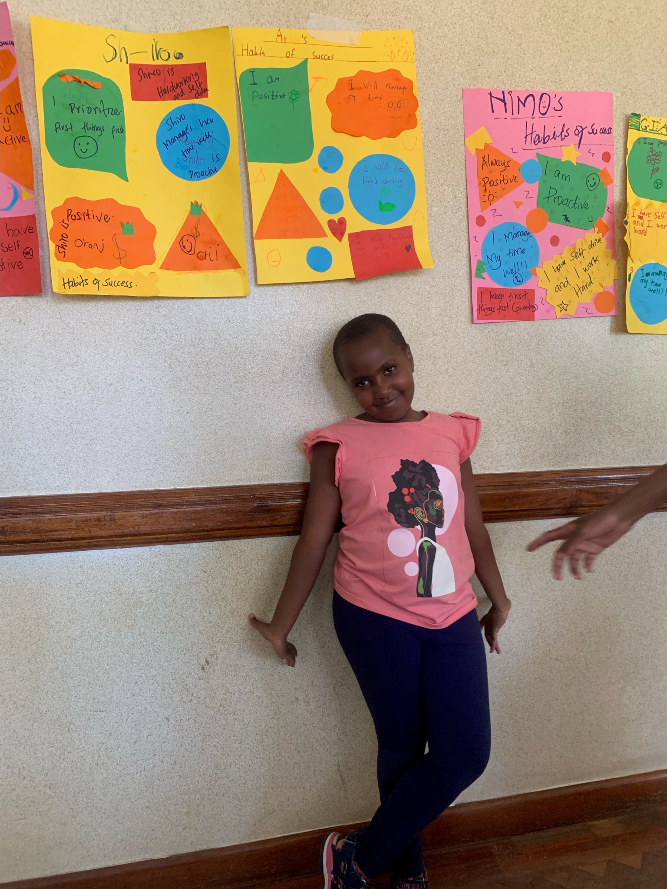
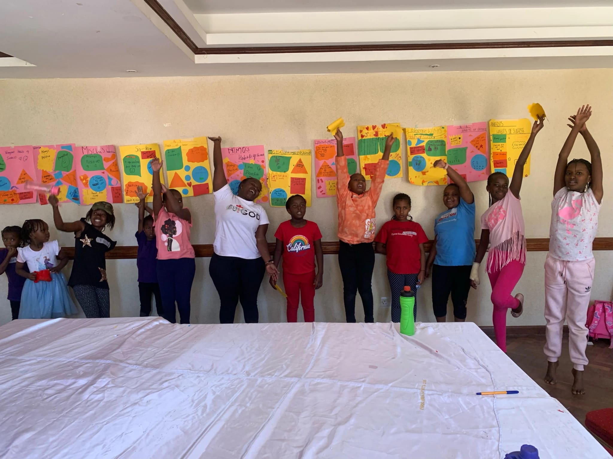

Hello our dear readers!. We have missed you and hope that you are well.
This week, after setting our goals and putting them down on paper, it was now time to equip ourselves with tools that would enable us to achieve them. One of the disciplines we discovered is having good habits. A habit is a regular tendency or practice that is hard to give up. As the wise man once said, If you are going to achieve excellence in big things, you develop the habit in little matters.
Once upon a time there lived an old man called Mzee Kizito . One day, Mzee Kizito was seated outside his compound with his grandchild, Tom. Tom was in class eight and he had started hanging out with the wrong group of friends and this worried his grandfather. He did not finish his homework on time, he was becoming rude to his family members and teachers, he would skip class once in a while and his grades were not good. Mzee Kizito loved Tom very much and he did not want him to end up being a bad person. As they were sitting outside, Mzee Kizito asked Tom to go pluck some grass and give him. Tom did as he was told. He asked Tom to go bring a branch of a twig that was just growing and Tom brought it. Finally, Mzee Kizito told Tom to go bring him an entire tree. Tom struggled and was not able to bring the tree. Mzee Kizito told Tom that is how difficult it is to remove a habit from a person . The more you keep doing something, the more the roots develop and and the harder it is to change a habit. He encouraged him to change his habits and make them better.
We all hope to learn from Mzee Kizito and build on our good habits so that we could accomplish our goals. We are a product of our habits. After our class, we all wrote down our habits which included being Proactive that is taking initiative and action to create the life we want. We want to be a people who keep a Positive Attitude in all that we do. We will Prioritize our tasks and be objective . We shall Manage our Time Effectively through planning ahead and setting deadlines and finally we shall be Self driven and hardworking people willing to do the work in order to reach our goals and by the help of God, our parents and our teachers who shall help us to be accountable and maintain these habits.
 